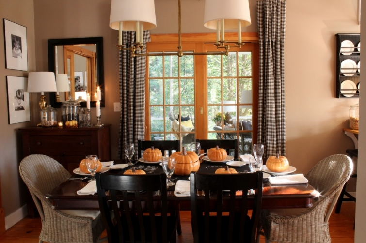
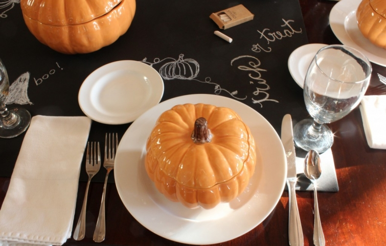
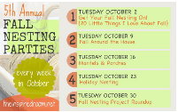

.png)
.PNG)
.PNG)
.PNG)
.PNG)
.PNG)
.JPG)
.JPG)
.PNG)
.PNG)


I cannot believe October is coming to an end this week. It seems like it just arrived! It will surely be Christmas in the blink of an eye. Earlier this month we looked at the fall decor around the house here, but I haven’t shown you the dining room. It is the most “Halloween-ie” 🙂 of my decorating. I hope you like it.

My sweet husband stopped at the Pottery Barn Outlet in North Georgia for me on the way home from a conference a couple of weeks ago. While he was there, he picked up this set of pumpkin soup bowls and the tureen (on sale!)
I thought it made for a great Halloween table setting. In the middle of the table is a black foam board. You know, the kind your children use for their science fair project backdrops. I used chalk to write and draw seasonal things on it, and guests can too. I just placed the dishes on top of it, and it can actually be used again by turning it over. (Glasses make water rings on the top side.)


Here is the dining room cabinet with a little touch of fall added to it for October.
And a closer look at the shelves.
I added a little bit of orange and a couple of pumpkins to the cabinet above the desk in the kitchen. (I apologize for the blurry photo. It is impossible to get a good shot in that corner.)
The coffee tray got a little pumpkin…
and the cookbooks did too.
As I write this, I am reminded what a gorgeous autumn day it is here. This is the view from my desk.
But I know many of you are preparing and bracing for a severe storm headed your way. All my guys are currently hiking down a mountain from a backpacking trip in Tennessee where the temperatures dropped overnight and the winds were to pick up majorly today. I pray that you will be safe and warm in your home wherever you are.
until next time…
I’m linking up with The Inspired Room for a favorite fall project.


.PNG)
Just love all your decorations…fun, attractive, and not over the top! Great ideas…
———————————————————————–
Thank you Marlene! I am glad you liked them.
Kelly
Hi Kelly! I LOVE the soup tureen and bowl set! I’ve wanted one like that for a while…what a sweet husband 🙂 I love the table too! Great idea on the black paper and chalk. I love it all! So welcoming and cozy
———————————————————————–
Lindsay – Thank you for stopping by and jumping in the conversation with your compliments! You need to get you a soup tureen and bowl set like that. I know you would do a gorgeous table setting with it!
Kelly
The black foam core board is a fabulous idea and your little touches made it absolutely stunning!! Beautiful seasonal tablescaping!!
——————————————————————–
Diane – So glad you thought the foam board was a good idea. Thank you for all the compliments!
Kelly
Your tablescape is wonderful!! I leave in the ‘burb near Memphis… so I LOVE to visit our Pottery Barn & Williams Sonoma Outlets. I try to go at least once a month – this time or year, sometimes more often. You never know what sort of treasures you’ll find. They “re-modeled” both stores about a year ago & added a section for West Elm. The prices seem to be a bit higher now; but you can still find the bargain every once in awhile. I scored a toy box for my son that was originally $250 – I think I paid $35 for it.
————————————————————————
Paula – What a steal on that toy box! They must have the PBkids with your Pottery Barn Outlet too. Love them both and wish they were closer! You are so lucky if you get to go once a month. I am glad you liked the tablescape. The PB stuff worked out great for it.
Kelly
Oh Kelly , you are so inspiring! Your house is what a home should be. Your talents and taste are wonderful. I have been a little under the weather, and I did nothing but study your home. It is so inviting. please keep up the posting.
————————————————————————
Linda – I am so sorry you have not felt well, but I am glad you had some good reading material. 🙂 Hope you are feeling better now. I had a bad stomach bug a week or so ago, and that was NOT fun. Thank you for leaving such sweet words here. You readers are just the best!
Kelly
Love the pumpkin bowls and tureen, how fun!
——————————————————————-
Barbara – Thanks for compliments on the pumpkin bowls! They are just perfect for the season. (I am having a hard time keeping myself from using them in other rooms of the house for decoration!)
Kelly
I am not a blogger but like to follow several blogs Found your blog through Southern Hospitality with Rhoda, which is one of my favorites. I love your house, property and style of decorating. Your husband did a good picking out the pumpkin tureen and dishes. I now enjoy following your blog.
————————————————————————
Glenna – Thanks for following! I owe Rhoda big-time for all the wonderful readers she has sent me. I am so glad you like the house. Thank you for reading and for your sweet comments here!
Kelly
Your Fall decor is beautiful….I love the pumpkin tureens…I have been to that Pottery Barn outlet and it is wonderful….i did stop by the one in South Carolina on my way to the Country Living Fair event and I did not see those tureens!…but did not leave there without some treasures…how can you not!…I just love the crisp days of Fall…but today we are dealing with the effects of the storm…just blustery and raining…and the leaves are falling 🙁
————————————————————————
Shirley – I wish I lived closer to that PB outlet. It is a good 3 hour drive (or more…depending on who’s driving :))from here. I have never been inside the one in South Carolina. We arrived too early on a Sunday for it to be open. I hopped over to your site and saw that you have some beautiful ceramic pumpkins in all your fall décor. My little 6 pumpkins have a ways to go to catch up with you! Ha ha. Thanks for reading and leaving your words of kindness!
Kelly
Once again, a beautiful post! And, we will be visiting our daughter this Thanksgiving in Georgia! So glad to hear there is a Pottery Barn outlet store not far from her! Thank you for that information!!!!!
———————————————————————–
Genny – You are too sweet! You will love the Pottery Barn outlet, and there is a Williams Sonoma one right across from it. Have fun with your daughter!
Kelly
Hi Kelly!
Just love your blog! I found it after you were featured on Rhoda’s Southern Hospitality blog! I live north of you in Griffin, GA. Love your house and decorating ideas! Keep it up!
————————————————————————
Sharon – We are practically neighbors! I’m happy you found me via Rhoda. She has sent me so many nice readers! Thank you for your compliments on everything. I really appreciate it!
Kelly
Kelly, I love how clean and neat everything is! I love the pumpkin dishes so much that I’d have to leave them out for Thanksgiving too! You always have such great ideas! This teacher is ready for this last week of October even though the month has flown by!
———————————————————————-
Dawn – If you could see the study where I work you would not think it is clean and neat! Dust in here is so thick, I think I could grow some plants. The kitchen and dining area are clean though – thank goodness. I’m glad you like the pumpkin dishes! I only want October to be finished if November can go a little slower. The thought of having to be ready for Christmas is overwhelming to me at this point. Thanks for dropping by the blog!
Kelly
I come to you via Pinterest and am your newest follower. I adore the little touches of autumn throughout your beautiful home. And those soup bowls and tureen are so sweet! Were I not in the middle of remodeling I too would love to add some color for the season in a number of ways. Maybe next year, until then I’ll live vicariously through you and other bloggers.
———————————————————————
Rose – I hope your remodel is finished quickly so that you can enjoy adding some seasonal things. Thank you for hopping over from Pinterest and adding your kind words to the conversation! (Pinterest can be quite addicting to me!) So glad you are my newest follower.:)
Kelly
Your table looks beautiful! I just started following your blog and I am really enjoying it. We are ready for Sandy, living just west of the Philadelphia area, I pray everyone stays safe.
———————————————————————-
Susan – I hope you are not getting any bad weather from the humongous storm. We have a lot of wind even this far from it, so I would suspect that you are affected by it too. Thank you for the sweet words about the table and the blog!
Kelly
Kelly,
What a sweet husband and such a great gift. I would leave them set out for the season, it makes the dining room look so festive and inviting. I love your shelf arrangements and your touch of orange baby pumpkins everywhere.
I do worry that this storm is going to do some damage to those in its path. I will say a little prayer tonight.
I agree, how can October be nearing and end?!
Karen
————————————————————————-
Karen – My husband is a sweetie (and a super patient man! :)) I would leave out the pumpkin things like you suggested, but he also got me a Thanksgiving piece, so I will be changing them out next week. I’m glad you liked the invasion of all the little pumpkins. I am saying a prayer for all those affected by the storm this evening too.
Kelly
i have those pumpkin soup bowls! love your table (of course) and i’m going to use your black foam board idea for the kids’ table at thanksgiving…there will be 8 littles 8 and under!
——————————————————————-
Judy – 8 kids under 8 – Wow that will be a lot of fun! I am glad you can use the black foam board idea – perfect for the kids’ table. Aren’t those pumpkin bowls great for the season? We are thinking alike again. 🙂
Kelly
Love your little pumpkin gourds placed aroung! Makes it feel so Fall! Hear ya on the end of October!?! thing….
Have a great Sunday evening…enjoyed finding your blog!
——————————————————————–
Linda – Thank you for finding the blog! Yes, October has certainly flown by. I hope November goes a little slower! Please visit again.
Kelly